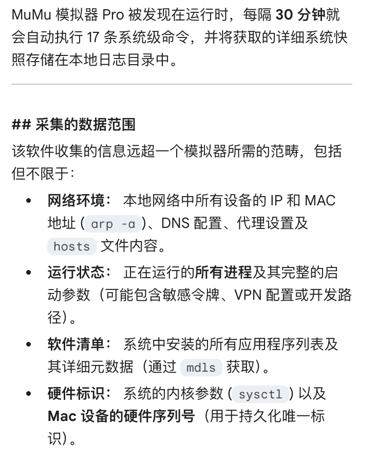
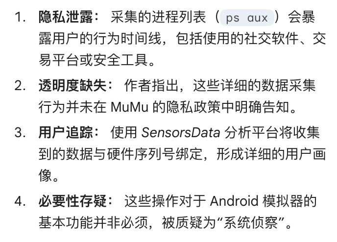

奶昔🥤
@realNyarime
@AztecaAlpaca 网易的 @uu_remote 也会扫盘，我也不知道它在干啥🤗


阿兹特克小羊驼
@AztecaAlpaca
网易 MuMu Player Pro 苹果电脑版被发现每 30 分钟静默执行 17 条系统侦察命令，包括读取进程、网络配置、应用程序信息等，数据通过 SensorsData 分析工具上传，并与硬件序列号绑定。
此类行为未在隐私政策中披露，被认为是超出模拟器功能的非必要数据收集。 https://t.co/dYkirNra7N